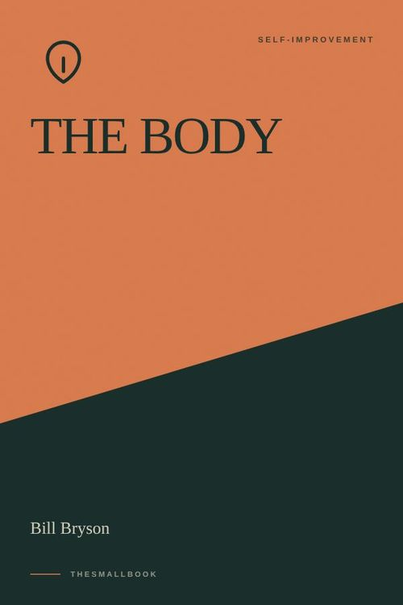

Library › Ask the Library › How do I sleep better?
How do I sleep better?
The short answer
Sleep is built in the daytime: morning light, evening screens off, a fixed wake time that never moves. The bed is for sleeping, if you're awake past 20 minutes, get up and do something boring. Consistency beats every supplement on the shelf.
The books behind the answer

The Body: A Guide for Occupants
Bill Bryson · 2019 · 8 min · 6 lessons
Bill Bryson's witty, awe-filled tour of the human body: the heart, the brain, the immune system and the strange history of how we learned what we know.
- The Brain Is the Last Frontier: Sleep is when the brain maintains itself, protect the maintenance window.

Dopamine Nation
Dr. Anna Lembke · 2021 · 8 min · 6 lessons
Pleasure and pain share one brain circuit - press pleasure too often and the brain fights back with pain. The fix: deliberate discomfort and dopamine fasts.
- Reset Your Reward System: Evening screens spike dopamine and delay sleep, the hour before bed is sacred.

The Miracle Morning
Hal Elrod · 2012 · 8 min · 6 lessons
How you start your day sets your life. One hour, six practices, and your mornings stop being a race you're losing.
- The SAVERS Routine: A fixed morning starts a fixed night, the day shapes the sleep.
Questions people ask next
Can I read this in Hindi?
Yes. This answer is written in simple English. Open any linked book and choose Hindi or Hinglish to read the full lessons in your language, with audio where available.